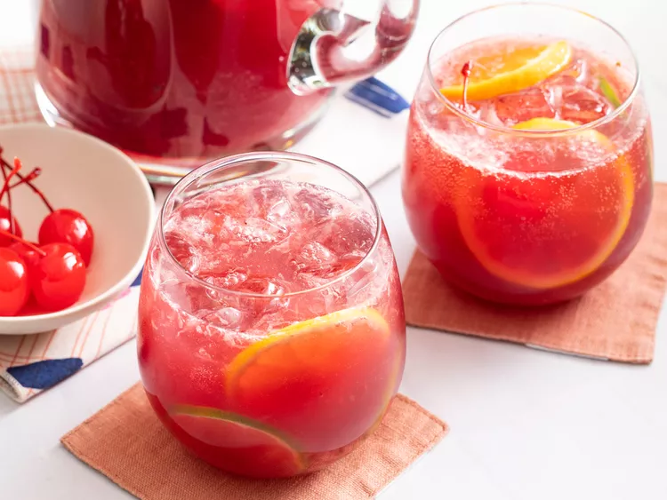

Sangria

Sangria is an alcoholic beverage originating in Spain and Portugal. Under EU regulations[1] only those two Iberian
nations can label their product as Sangria; similar products from different regions are differentiated in name.
Ingredients
- 1 (750 milliliter) bottle dry red wine
- ½ cup brandy
- ½ cup triple sec
- ⅓ cup frozen lemonade concentrate
- ⅓ cup orange juice
- ¼ cup lemon juice
- ¼ cup white sugar (Optional)
- 1 medium orange, sliced into rounds
- 1 medium lemon, sliced into rounds
- 1 medium lime, sliced into rounds
- 8 maraschino cherries
- 2 cups carbonated water (Optional)
Directions
- Gather all ingredients.
- Mix together red wine, brandy, triple sec, lemonade concentrate, orange juice, lemon juice, and sugar in a bowl.
Add orange, lemon, and lime slices and maraschino cherries.
- Serve immediately over ice, or refrigerate 8 hours to overnight for best flavor. For a fizzy sangria, add club
soda just before serving.